La Casa Gryffindor fue fundada por el célebre mago Godric Gryffindor. Godric sólo aceptaba en su casa a aquellos magos y brujas que tenían valentía, disposición, coraje y caballerosidad, ya que éstas son las cualidades de un auténtico Gryffindor. Los colores de esta casa son el dorado y el escarlata y su símbolo es un león. La reliquia más preciada de la casa es la espada de Godric Gryffindor, perteneciente, como su nombre indica, al fundador de la casa. Los estudiantes de esta casa pasan la mayor parte del tiempo en la Torre de Gryffindor, ubicada en el séptimo piso del Castillo de Hogwarts. Su elemento es el fuego.
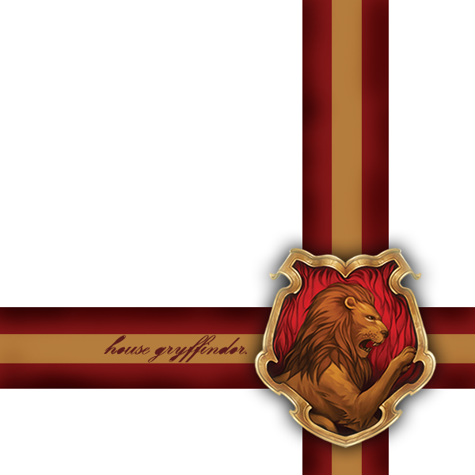 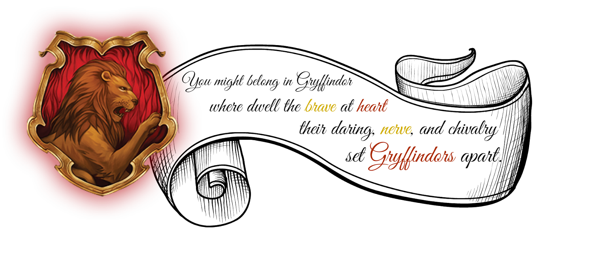 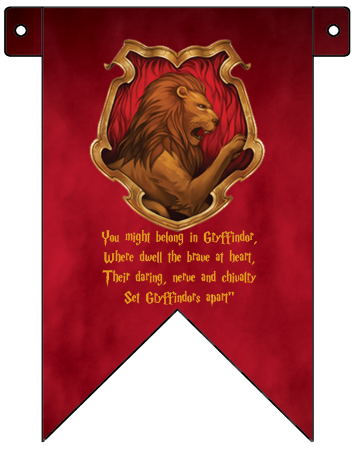La Casa Slytherin está caracterizada principalmente por la ambición y la astucia. Fue fundada por el mago Salazar Slytherin. La Sala Común está situada en las mazmorras, pasando por un serie de numerosos pasillos subterráneos. Posiblemente se llega a ellos a través del Vestíbulo de Hogwarts . Específicamente se encuentra debajo del Lago Negro, haciendo que la sala común sea fría y con una tonalidad verdosa, ya que hay ventanas que dan a las aguas. Se accede a ella por una puerta altamente disimulada en un muro de piedra, diciendo una contraseña requerida. La única conocida es "Sangre Pura". Su principal reliquia es el guardapelo de Salazar Slytherin. El animal representativo es la serpiente, sus colores son verde y plateado y el elemento es el agua, asociada con la astucia y la frialdad.
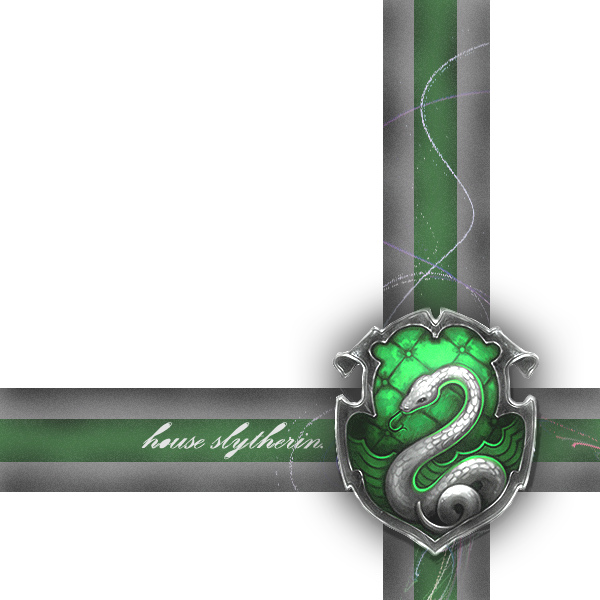 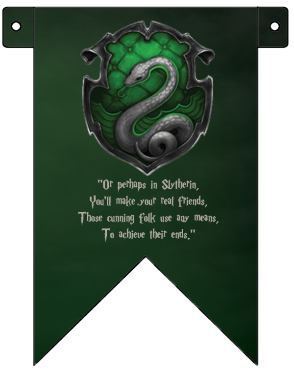 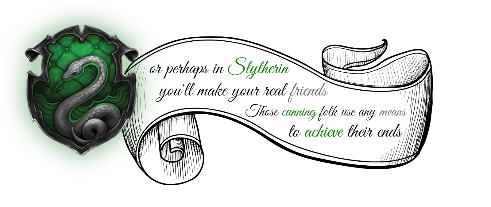La Sala Común de Hufflepuff se encuentra en una bodega en el mismo pasillo subterráneo que la cocina. Inicialmente, Hufflepuff buscaba alumnos que simplemente quisieran pertenecer a esa casa, aunque actualmente busca alumnos leales, honestos y que no teman el trabajo pesado. La fundadora es nada menos que la bruja Helga Hufflepuff, amiga desde la infancia de Rowena Ravenclaw. Helga fue una bruja muy noble, amigable y la principal impulsora de que Hogwarts aceptase a alumnos nacidos de muggles. La principal reliquia de la casa es la copa de Helga Hufflepuff. El símbolo de la casa es un tejón negro y sus colores representativos son el amarillo y el negro carbón. Su elemento es la tierra.
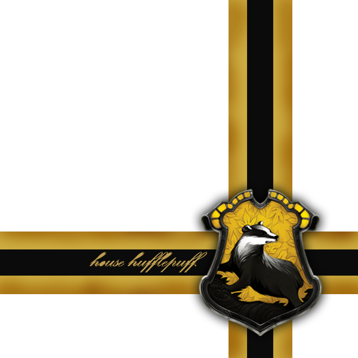 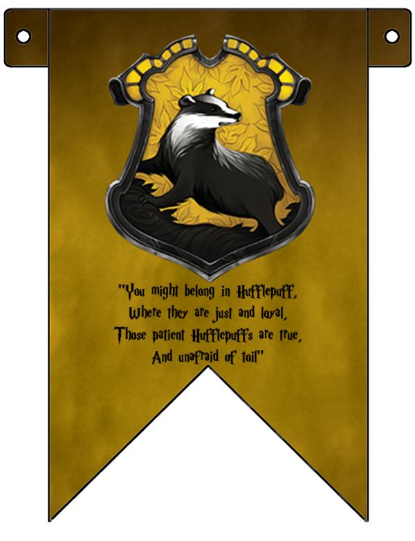 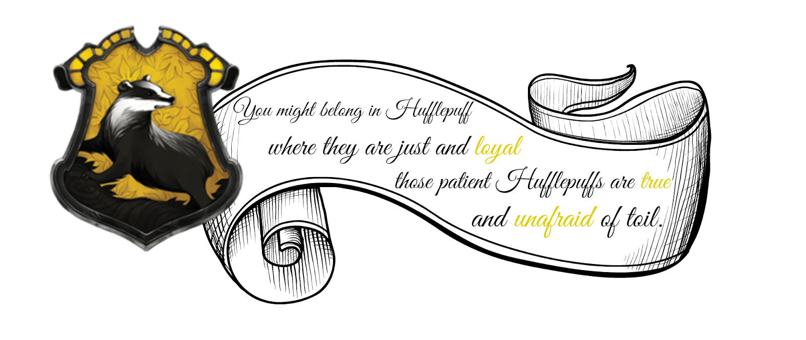La Casa Ravenclaw se encuentra en una torre en el ala oeste del castillo. En la entrada se encuentra una estatua con forma de águila que dice acertijos y sólo te deja entrar si lo resuelves. Sus colores son el azul y el bronce. Ravenclaw busca alumnos creativos, curiosos y que siempre busquen la respuesta. Fue fundada por la bruja, nacida en las cañadas de Escocia, Rowena Ravenclaw. Supuestamente es la principal inventora del nombre, lugar y formato de Hogwarts. También es la causante de que las escaleras se muevan. Su principal reliquia es la diadema de Rowena Ravenclaw. El símbolo de la casa es el águila, aunque en alguna versión del escudo es un cuervo. Su elemento es el aire.
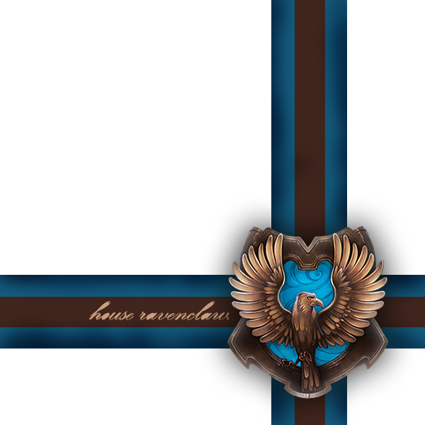 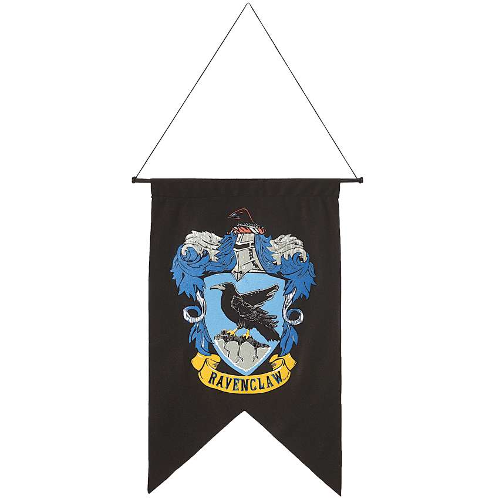 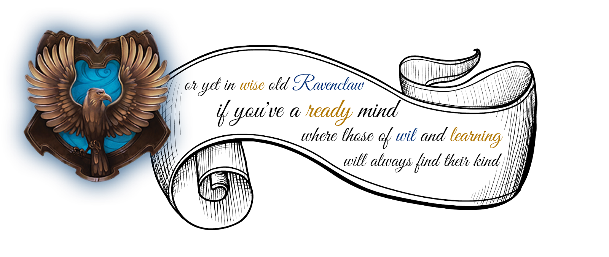Tu casa tiene 3 vidas restantes.
La casa rival tiene 3 vidas restantes.